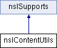

类 nsIContentUtils 继承关系图:

Public 成员函数 | |
| bool | IsSafeToRunScript () |
| nsresult | AddDocumentObserver (nsIDocument *aDocument, nsIDocumentObserver *aObserver) |
| nsresult | RemoveDocumentObserver (nsIDocument *aDocument, nsIDocumentObserver *aObserver) |
| nsresult | AddMutationObserver (nsINode *aNode, nsIMutationObserver *aObserver) |
| nsresult | RemoveMutationObserver (nsINode *aNode, nsIMutationObserver *aObserver) |
| nsresult | AddScriptRunner (nsIRunnable *aRunnable) |
| JSContext * | GetContextFromDocument (nsIDocument *aDocument) |
 Public 成员函数 继承自 nsISupports Public 成员函数 继承自 nsISupports | |
| nsresult | QueryInterface (nsIIDRef riid, void **result) |
| nsrefcnt | AddRef () |
| nsrefcnt | Release () |
该接口的文档由以下文件生成:
- E:/ReactOS-0.4.6/dll/win32/mshtml/nsiface.idl